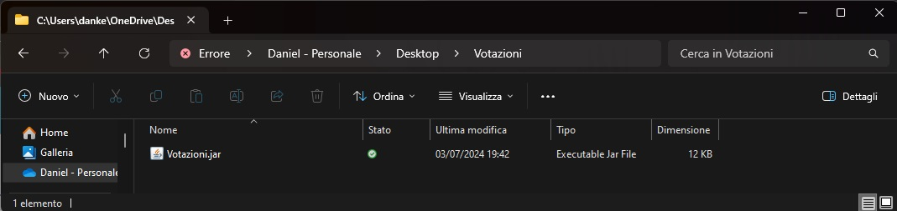
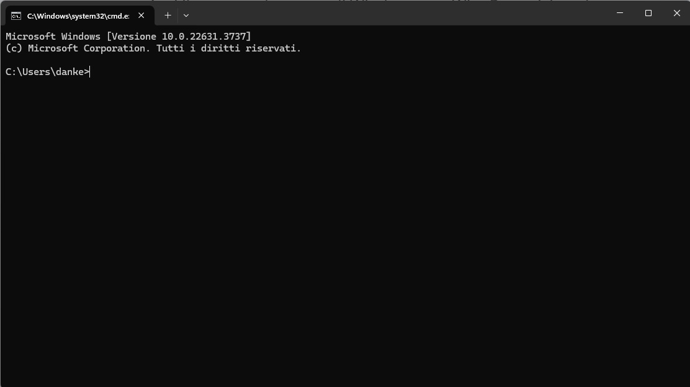
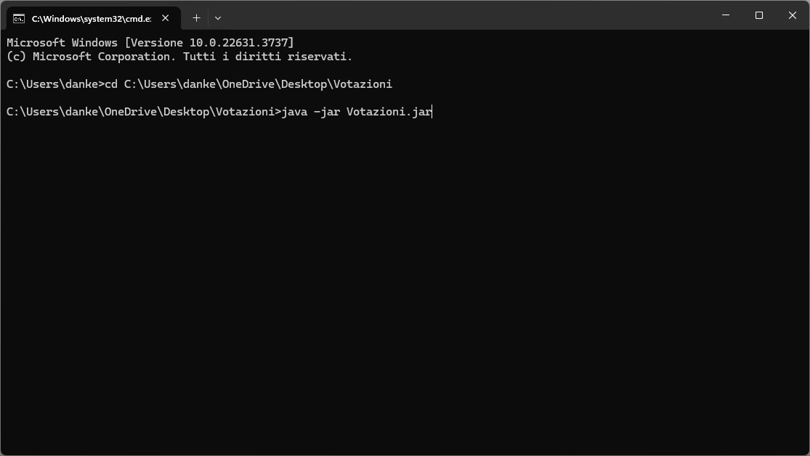
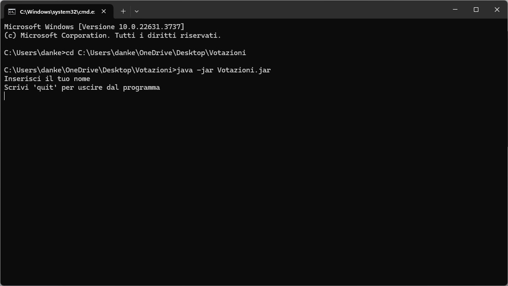
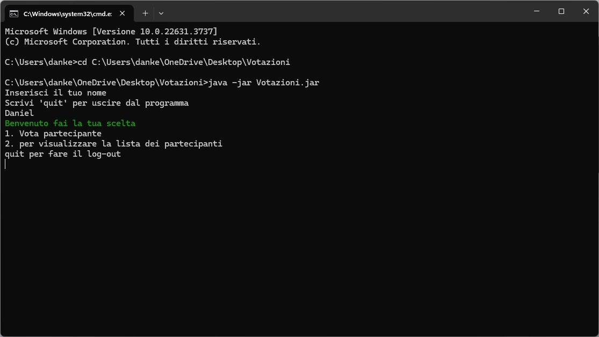
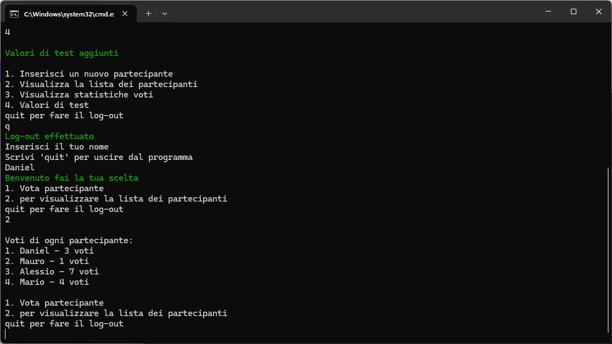

Sistema Votazioni EasyVotes
I partecipanti di oggi:
EasyVotes vi permetterà attraverso un sistema intuitivo navigabile con semplici menù di gestire al meglio il vostro sistema di votazione.
Ecco come funziona e cosa richiede...
- Sistema operativo compatibile con JRE con architteture x64 o x86
- Programma per archivi compressi tali: Winrar, Winzip, 7zip o tar su Linux
- Minima conoscenza della shell del proprio sistema operativo (Command prompt su Windows)
-
Prima di tutto scarica ed estrai il contenuto dell'archivio in qualsiasi directory del tuo PC
Download

-
Apri il command prompt di Windows con Win+R e scrivi cmd

-
Oppure apri il menù Start , scrivi cmd e aprilo.

-
Naviga con il comando ‘cd’ fino alla cartella dove hai estratto il file .jar

-
Esegui il comando ‘java -jar Votazioni.jar’ per eseguire il programma

Inserisci il tuo nome ed utilizzando il menu potrai:
- Votare uno dei partecipanti
-
Visualizzare la lista dei partecipanti
